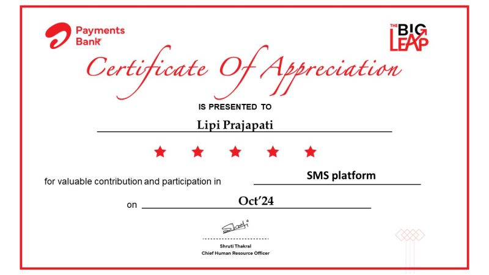

2023.12 — present
Senior Analyst · Accenture
Production-grade backend and platform engineering, working on observably scalable, event-driven services.
// backend engineer — india
I'm Lipi Prajapati, a backend engineer with 6 years of experience designing event-driven microservices — the kind that stay legible under load because every path through them is measured, logged, and traced.
// about
I'm a backend-focused engineer working across production platform and application development roles, currently a Senior Analyst at Accenture in India, after starting my career at Tata Consultancy Services. Along the way I picked up an internship at PageUp Software Services and an MCA from Gyan Ganga College of Technology, Jabalpur.
My work centers on event-driven architectures — services that talk to each other over Kafka, expose clean GraphQL and REST contracts, and stay debuggable in production because observability was designed in, not bolted on afterward. Right now I'm deepening my focus on hexagonal architecture and GraphQL API design, picking up Spring Cloud and applied AI on the side, and using AI pair-programming tools like Cursor, Claude, and GitHub Copilot to move faster without cutting corners on quality.
// stack
// log
Production-grade backend and platform engineering, working on observably scalable, event-driven services.
Backend and platform engineering work following the move from TCS.
Progressed from Assistant System Engineer Trainee through Assistant System Engineer to System Engineer, building foundations in enterprise software delivery.
Early hands-on experience before moving into full-time engineering roles.
Gyan Ganga College of Technology, Jabalpur.
Mata Gujari Mahila Mahavidyalaya, Jabalpur.
// achievements
Recognized as a "Rising Star" at Airtel Payments Bank's Rewards & Recognition ceremony, for contributions to their SMS platform — awarded directly by the client, not just internally.
see the post on LinkedIn ↗
// projects
A full-stack TODO application pairing an Angular front end with a Spring Boot backend.
view repo ↗An Angular front end wired to a Node.js service for sending email.
view repo ↗An online ordering system built on Angular 10 with NgRx for state management.
view repo ↗Sending Gmail messages with plain text and attachments, built with Maven.
view repo ↗Synchronous email sending in ASP.NET Core using MailKit.
view repo ↗All repositories, including work in progress.
// contact
Open to conversations about backend engineering, distributed systems, and observability. Reach out through any of these: